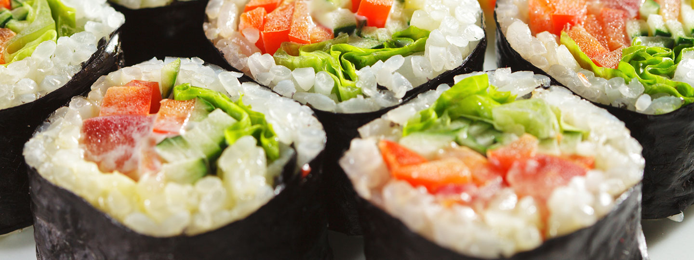

S & R Taste
Poha - is a very popular breakfast dish in the Indian states of Maharashtra and Gujarat.
Read moreShamoosha -Normally served as an entree or appetiser. Potatoes, onions, peas, coriander, and lentils.
Read moreBiryani -Spicy rice dish with vegetables or chicken or mutton or fish or prawns.
Read morePani Puri -A small crisp hollow round bread filled with spiced water, tamarind paste, potato, onion, and chickpeas.
Read more
Kati Roll -A street food popular across India (and abroad). A wrap of kebabs, eggs, vegetables, and spices rolled into paratha(bread).
Read more
Tandoori Chicken -Chicken marinated for hours in a paste of yogurt and spices, and then roasted in a clay oven called a tandoor.
Read moreBaingan Bharta -Roasted eggplant mashed together with a variety of other vegetables and spices, served with flatbread.
Read moreRogan Josh -A lamb curry of Persian origin, now popular in the Kashmir area. In India, made using goat meat instead of lamb.
Read moreDosa -A crispy, flat bread (similar to a crepe or pancake) made of rice batter, served with a lentil sauce (sambar) and a variety of chutneys.
Read moreRecheado Fish -A spicy paste made of chilies, tamarind, and garlic is rubbed onto whole fish which are then fried.
Read moreGulab Jaamon -Small balls of dried milk, slow cooked and boiled in a sugar syrup. Right after delicious meal as dessert.
Read moreGaajar Halwa -An extremely popular dessert, made by cooking grated carrot with milk, sugar, and dried fruits.
Read moreKulfi -An iced preparation made from thickened milk, almonds and pistachios. ice-cream but with an Indian touch.
Read moreJalebi -A wheat flour batter deep fried in coil-shapes and soaked in sugar syrup, served hot.
Read moreNew Item
Bhel Puri
What It Is: Puffed rice fried with vegetables, in a spicy and tangy tamarind sauce.Perfect For: When you want a chilled savory snack.Feels Like: Sitting in the back of a rickshaw at the peak of summer, thankful for the breeze.
New Item
Dhokla
What It Is: A snack/breakfast food from the state of Gujurat, made of fermented rice and chickpea batter.Perfect For: An very, very light yet very, very flavorful snack.Feels Like: Gossiping with your aunts and cousins for hours.